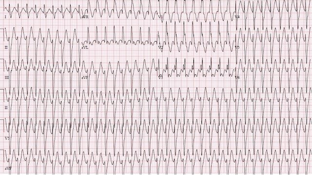
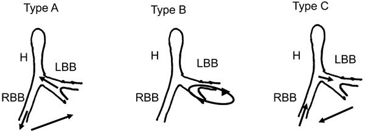
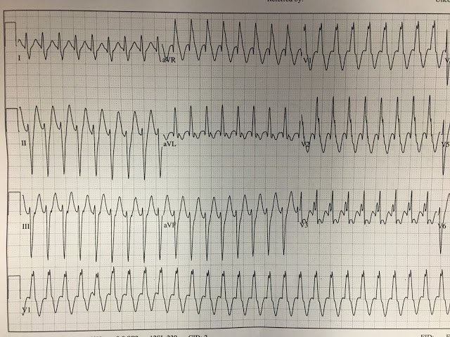
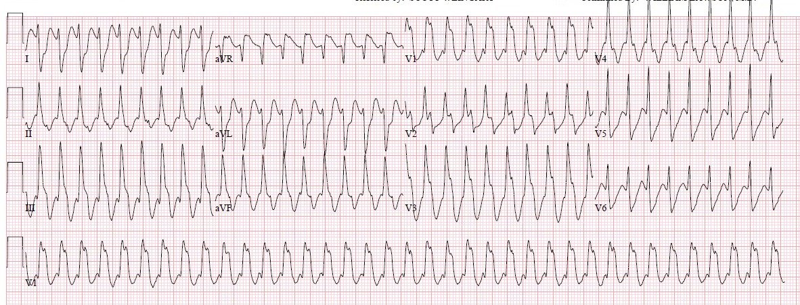
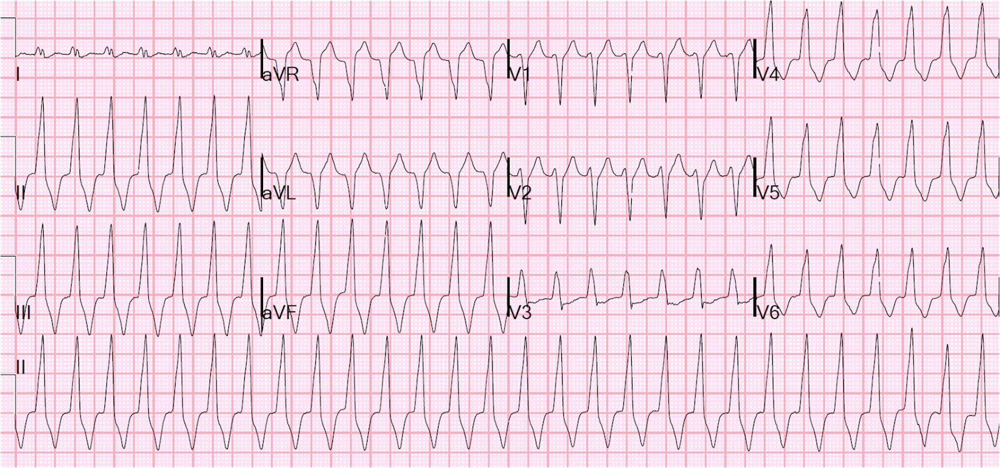
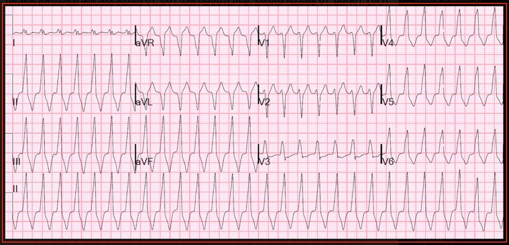

14/09/2018 — Nhịp nhanh thất vô căn dành cho bác sĩ cấp cứu
Bản dịch tiếng Việt của bài "Idiopathic Ventricular Tachycardias for the EM Physician" – Dr. Smith’s ECG Blog. Giữ nguyên toàn bộ 12 hình ảnh của bản gốc.
Tác giả Pendell Meyers, bình duyệt bởi Steve Smith và Scott Weingart
“Nhịp nhanh thất vô căn” (idiopathic ventricular tachycardias) là một nhóm rối loạn nhịp nhanh khởi phát bên dưới nút AV và bó His nhưng khác về nguyên nhân, tiên lượng và điều trị so với nhịp nhanh thất (VT) kinh điển. Cái tên “vô căn” ngày càng trở nên không phù hợp, vì nhiều phân nhóm cụ thể và nguyên nhân cụ thể đang dần được phát hiện, bao gồm VT đường ra thất phải, VT phân nhánh (fascicular VT) và VT vào lại nhánh bó His (bundle branch reentrant VT). Để hiểu các thực thể này, trước hết phải hiểu sự khác biệt giữa VT kinh điển và các VT vô căn.
VT kinh điển cho đến nay là nguyên nhân thường gặp nhất của nhịp nhanh đều QRS rộng. Nó khởi phát từ cơ tim (thường là bệnh lý), vốn liên quan đến tuổi cao, bệnh tim mạch, bệnh tim cấu trúc và/hoặc thiếu máu cục bộ. VT kinh điển mang tiên lượng của nguyên nhân nền của nó, và nhìn chung được xem là có tỷ lệ diễn tiến xấu đi và tổn hại huyết động đáng kể, phần lớn do chức năng cơ tim nền kém. Trên điện tâm đồ, VT kinh điển có xu hướng có thời gian QRS dài hơn và hình thái dẫn truyền rộng hơn, kém tổ chức hơn so với VT vô căn, phản ánh khái niệm then chốt rằng VT kinh điển thường không khởi phát trong hoặc gần hệ thống dẫn truyền nội tại, trong khi nhiều VT “vô căn” thì có. Khác với VT “vô căn”, VT kinh điển dễ biểu hiện các dấu hiệu có độ đặc hiệu trung bình hơn, như phân ly nhĩ thất, nhát hỗn hợp, QRS đồng hướng ở chuyển đạo trước tim, khoảng từ R đến đáy sóng S (R to S-wave nadir) ở chuyển đạo trước tim lớn hơn 100 msec, R lớn hơn R’ ở V1, sóng R dương lớn ở aVR, v.v., tuy nhiên không dấu hiệu nào trong số này đáng tin cậy khi đứng riêng lẻ.
Xét chung như một nhóm, các VT vô căn thường gặp ở bệnh nhân trẻ hơn, khỏe mạnh hơn so với bệnh nhân VT kinh điển điển hình, và nhìn chung được xem là có tiên lượng rất tốt, với tỷ lệ tổn hại huyết động và diễn tiến xấu đi của nhịp thấp. Các rối loạn nhịp này có cơ chế có thể là tự động hoặc vào lại, và chúng thường đáp ứng với các thuốc chống loạn nhịp mà thông thường sẽ không hiệu quả hoặc thậm chí chống chỉ định trong VT kinh điển. Có thể hiểu rõ hơn các VT vô căn qua các phân nhóm đã biết, hiện có ít nhất 3-4 phân nhóm:
1) VT đường ra thất phải (RVOT VT)
Cơ chế: hoạt động khởi kích (triggered activity) khởi phát ở đường ra thất phải (RVOT), sau đó đi vào một phần của hệ thống dẫn truyền lân cận (được cho là đi vào nhánh phải (RBB) trong vách liên thất).
Đặc điểm điện tâm đồ cơ bản: hình ảnh LBBB ở chuyển đạo trước tim kèm trục mặt phẳng trán hướng xuống dưới
Điều trị: thường đáp ứng với adenosine
Ví dụ: RVOT (LBBB + trục hướng xuống dưới)

Bệnh liên quan: loạn sản thất phải gây loạn nhịp (Arrhythmogenic Right Ventricular Dysplasia)
Biến thể: một rối loạn nhịp tương tự đã được mô tả là khởi phát từ đường ra thất trái, với hình thái RBBB kèm trục mặt phẳng trán hướng xuống dưới (hình thái RBBB + LPFB). Đáp ứng với điều trị chưa được biết.
2) Nhịp nhanh thất trái phân nhánh (Fascicular Left Ventricular Tachycardia)
Cơ chế: rối loạn nhịp vào lại khởi phát trong hoặc gần những phần cụ thể của hệ thống dẫn truyền nội tại của thất trái. Có ít nhất ba phân nhóm dựa trên vị trí, trong đó hai phân nhóm quan trọng nhất là VT phân nhánh sau (cho đến nay là thường gặp nhất) và VT phân nhánh trước.
Đặc điểm điện tâm đồ cơ bản:
VT phân nhánh sau: hình thái RBBB ở chuyển đạo trước tim kèm trục lệch trái (hoặc hình thái LAFB) ở mặt phẳng trán
VT phân nhánh trước: hình thái RBBB ở chuyển đạo trước tim kèm trục lệch phải (hoặc hình thái LPFB) ở mặt phẳng trán
Điều trị: VT phân nhánh sau thường được cho là nhạy với verapamil. VT phân nhánh trước dường như chưa có một điều trị bằng thuốc nào được báo cáo nhất quán.
Ví dụ:


3) Nhịp nhanh thất vào lại nhánh bó His (BBRVT)
Cơ chế: vòng vào lại bao gồm ít nhất một phần của hệ thống dẫn truyền nội tại. Khác với các VT vô căn khác, BBRVT thường liên quan đến bệnh tim cấu trúc nền hơn.


Đặc điểm điện tâm đồ cơ bản: tùy thuộc vào các nhánh/phân nhánh tham gia và hướng dẫn truyền, có thể tạo ra bất kỳ tổ hợp nào của hình thái blốc nhánh và/hoặc blốc phân nhánh. Loại được báo cáo thường gặp nhất dường như đi xuôi dòng qua nhánh phải (RBB) và ngược dòng qua nhánh trái (LBB), khiến điện tâm đồ có hình thái LBBB.
Điều trị: nhóm rối loạn nhịp này dường như không có điều trị bằng thuốc hiệu quả. Cả adenosine lẫn verapamil đều chưa được báo cáo là hiệu quả một cách nhất quán đối với các nhịp này, tuy nhiên chúng hiếm đến mức nghiên cứu còn rất hạn chế.

Ví dụ: Palpitations of Unusual Etiology (Hồi hộp đánh trống ngực do nguyên nhân bất thường)
VT kinh điển so với các VT vô căn
| VT kinh điển | Các VT vô căn | |
| Tuổi | Lớn hơn | Trẻ hơn |
| Bệnh đồng mắc | Nhiều hơn | Ít hơn |
| Tiên lượng | Xấu hơn | Tốt hơn |
| Nguy cơ tổn hại huyết động / diễn tiến xấu đi của nhịp | Cao hơn | Thấp hơn |
| Thời gian QRS | Rộng hơn | Hẹp hơn |
| Chức năng thất trái trên siêu âm tại giường (POCUS) | Kém hơn | Tốt hơn |
Đặc điểm điện tâm đồ chung của VT, VT vô căn và SVT kèm dẫn truyền lệch hướng:
Vì các VT vô căn (khác với VT kinh điển) thường sử dụng hệ thống dẫn truyền nội tại, chúng thường không thể phân biệt được với SVT kèm dẫn truyền lệch hướng do có hình thái bao gồm blốc nhánh và/hoặc blốc phân nhánh. Phân biệt VT kinh điển với SVT kèm dẫn truyền lệch hướng và/hoặc VT vô căn không phải là trọng tâm của bài này (xem các bài như bài này, bài này và bài này), tuy nhiên có một số quy tắc kinh nghiệm (rule of thumb) hữu ích đáng nêu ở đây:
- Thời gian QRS từ 140-200 msec trở lên nhiều khả năng là VT kinh điển và/hoặc tăng kali máu hơn, nhưng chắc chắn cũng có thể là SVT kèm dẫn truyền lệch hướng. Phần lớn VT vô căn/VT phân nhánh có thời gian QRS từ 140 ms trở xuống.
- Nếu phần đầu của QRS được dẫn truyền theo cách rộng, mất tổ chức, không đều, thì VT kinh điển có khả năng cao hơn rất nhiều. Nếu phần đầu của QRS được dẫn truyền theo cách nhanh, dốc, có tổ chức, thì điều này hàm ý có sử dụng hệ thống dẫn truyền nội tại, vốn xảy ra trong SVT kèm dẫn truyền lệch hướng và nhiều VT vô căn.
- Tần số thất của một nhịp nhanh đơn dạng đều QRS rộng không thể dùng một cách đáng tin cậy để phân biệt VT vô căn với VT kinh điển, vì các khoảng tần số điển hình phần lớn chồng lấp nhau và thực sự không có giới hạn trên đáng tin cậy nào cho cả hai thực thể.
- Quan trọng nhất: VT cho đến nay là nguyên nhân thường gặp nhất của nhịp nhanh đều QRS rộng, và không có cách nào hoàn toàn đáng tin cậy để phân biệt VT kinh điển với VT vô căn và với SVT kèm dẫn truyền lệch hướng trên điện tâm đồ bề mặt 12 chuyển đạo.
Chẩn đoán phân biệt tiến cứu và kế hoạch điều trị dựa trên đặc điểm điện tâm đồ:
Là bác sĩ cấp cứu, chúng ta hiếm khi biết chính xác nhịp ngay tại thời điểm đứng trước một bệnh nhân bị nhịp nhanh đều QRS rộng. Điều chúng ta có thể làm ngay tại thời điểm đó là nhận diện hình thái QRS phù hợp với một trong các kiểu hình ảnh điển hình sau:
Hình thái RBBB + LAFB (trục mặt phẳng trán lệch trái)


Chẩn đoán phân biệt về nhịp bao gồm VT kinh điển, SVT kèm RBBB+LAFB, VT phân nhánh sau, BBRVT, và có lẽ các nhịp hiếm gặp, ít được biết đến khác. Nếu bạn tin rằng đây là một trong các VT vô căn chứ không phải VT kinh điển hay SVT kèm RBBB+LAFB, thì VT phân nhánh sau có thể là nguyên nhân khả dĩ nhất. VT phân nhánh sau thường nhạy với verapamil. Tuy nhiên, phải cân nhắc khả năng vô tình cho verapamil cho một VT kinh điển, điều chính thức bị chống chỉ định. Sốc điện chuyển nhịp đồng bộ (giả sử bạn tránh sốc vào sóng T) là biện pháp điều trị duy nhất vừa an toàn vừa hiệu quả với mọi nguyên nhân trong nhóm này. Các chuyên gia như Dr. Smith có thể cân nhắc cho verapamil nếu sốc điện không hiệu quả VÀ bệnh nhân có chức năng thất trái rất tốt trên POCUS, không có tiền sử bệnh cơ tim, nhồi máu cơ tim (MI), suy tim, v.v.
Hình thái RBBB + LPFB (trục mặt phẳng trán lệch phải):


Chẩn đoán phân biệt về nhịp bao gồm VT kinh điển, SVT kèm RBBB+LPFB, VT phân nhánh trước, BBRVT, VT đường ra thất trái (LVOT VT), và có lẽ các nhịp hiếm gặp, ít được biết đến khác. Nếu bạn tin rằng đây là một trong các VT vô căn chứ không phải VT kinh điển hay SVT kèm RBBB+LPFB, thì VT phân nhánh trước có thể là nguyên nhân khả dĩ nhất. VT phân nhánh trước được cho là có phần kém nhạy với verapamil hơn VT phân nhánh sau, nhưng có một số ca được báo cáo là hiệu quả. Tuy nhiên, một lần nữa phải cân nhắc khả năng vô tình cho verapamil cho một VT kinh điển, điều theo kinh điển bị chống chỉ định. Sốc điện chuyển nhịp đồng bộ (giả sử bạn tránh sốc vào sóng T) là biện pháp điều trị duy nhất vừa an toàn vừa hiệu quả với mọi nguyên nhân trong nhóm này.
Hình thái LBBB + trục mặt phẳng trán hướng xuống dưới:


Chẩn đoán phân biệt về nhịp bao gồm VT kinh điển, SVT kèm LBBB, RVOT VT, BBRVT, và có lẽ các nhịp hiếm gặp, ít được biết đến khác. Nếu bạn tin rằng đây là một trong các VT vô căn chứ không phải VT kinh điển hay SVT kèm LBBB, thì RVOT VT sẽ là khả năng cần cân nhắc nhiều nhất trong nhóm này, vốn điển hình là nhạy với adenosine. Điều này thuận tiện vì adenosine vốn đã được chỉ định và khuyến cáo trong các hướng dẫn của chúng ta cho nhịp nhanh QRS rộng, đơn dạng, ổn định. Một lần nữa, sốc điện chuyển nhịp đồng bộ (giả sử bạn tránh sốc vào sóng T) là biện pháp điều trị duy nhất vừa an toàn vừa hiệu quả với mọi nguyên nhân trong nhóm này. Tuy nhiên, adenosine cũng là một chiến lược an toàn, được chỉ định và ít xâm lấn hơn trong tình huống này, vì nó sẽ không gây hại cho bệnh nhân bị VT kinh điển.
Điều cốt lõi:
Từ những cân nhắc trên, tôi đề xuất hai lựa chọn cho thực hành của bạn, với hai quan điểm trái ngược nhau, cả hai đều phản ánh mức độ suy tính và suy ngẫm kỹ lưỡng về chủ đề này.
Trước tiên, vì những bệnh nhân này thường khá ổn định, hãy xem bạn có thể tìm được hồ sơ cũ nào giúp làm sáng tỏ chẩn đoán không, cũng như bất kỳ lần chuyển nhịp nào trước đây thành công hay thất bại.

Lựa chọn #1: Lửng mật (Honey Badger)
Với lựa chọn này, về cơ bản bạn bỏ qua sự tồn tại của các VT vô căn này, bảo đảm rằng bạn không bao giờ có thể mắc sai lầm do chẩn đoán nhầm một nhịp là VT vô căn trong khi thực ra KHÔNG phải VT vô căn. Lập luận bao gồm:
- “Không có cách nào đáng tin cậy để phân biệt VT vô căn với VT, vì vậy tôi luôn nên giả định là VT vì chiến lược này an toàn hơn.”
- “Ngay cả khi tôi có thể chứng minh ngay tại thời điểm đó rằng đó là một VT vô căn, bằng chứng liên hệ các kiểu hình ảnh điện tâm đồ với điều trị hiệu quả còn yếu, và một số biện pháp điều trị còn nhiều nghi vấn mà anh khuyên dùng có thể có tác dụng phụ bất lợi”
- “Điều trị an toàn và hiệu quả nhất cho mọi VT vô căn là sốc điện, vậy tại sao tôi phải mất công chẩn đoán một thứ hiếm gặp và ít nguy hiểm hơn khi đằng nào điều trị cũng như nhau?”
- “Ngay cả khi tôi đúng về chẩn đoán và cách điều trị khả dĩ, nếu có bất cứ điều gì sai sót theo bất kỳ cách nào và lập luận của tôi lại dựa trên việc điều trị VT vô căn, thì làm sao tôi tự bảo vệ mình được khi không có thuật toán nhịp nhanh nào trong các hướng dẫn đề cập đến VT vô căn?”
- “Sốc điện chuyển nhịp vừa an toàn, vừa hiệu quả, lại vui.”

Lựa chọn #2: Kẻ cầu kỳ (Fancy Pants)
Ở lựa chọn này, bạn áp dụng một cách thực hành trong đó bạn hành động dựa trên sự nghi ngờ VT vô căn (IVT) từ kinh nghiệm của mình, nhưng theo một cách đã được suy tính trước để tránh các cạm bẫy và biến chứng trong trường hợp bạn sai. Bạn đã tính toán chính xác khi nào và tại sao mình sẽ dùng từng thuốc. Lập luận bao gồm:
- Adenosine: “Miễn là nhịp nhanh QRS rộng đơn dạng và đều, adenosine an toàn và được hướng dẫn chấp thuận cho bệnh nhân ổn định, và giả sử tôi đã chuẩn bị sẵn cho khả năng luôn hiện hữu là nhịp diễn tiến xấu đi ngoài dự kiến do adenosine, giống như khi tôi chuyển nhịp một SVT QRS hẹp, thì không thể có sai sót nào quy cho việc cân nhắc VT phân nhánh (FVT) trong tình huống này.” Dr. Smith chỉ cho adenosine nếu RVOT nằm trong chẩn đoán phân biệt, và đó là khi có hình ảnh LBBB kèm trục hướng xuống dưới.
- Verapamil: thuốc này có phần rắc rối hơn, do Hướng dẫn ACLS 2015 chống chỉ định verapamil/diltiazem trong bối cảnh có thể là VT (Nhóm III, mức bằng chứng B). Có một số người thực hành tin rằng thuốc chẹn kênh calci có lẽ an toàn sau khi siêu âm tại giường chất lượng cao cho thấy co bóp tim bình thường. Nếu bạn thuộc phe đó, thì bạn có thể lập luận rằng kế hoạch của bạn đối với FVT nghi nhạy với verapamil sẽ là: 1) bảo đảm co bóp tốt bằng siêu âm tại giường + xem lại hồ sơ, rồi 2) cho verapamil trong khi chuẩn bị sẵn cho khả năng nhỏ diễn tiến xấu đi +/- các “bùa phép” dự phòng (voodoo) gồm truyền dịch nhanh (bolus) và calci, v.v. Dr. Smith luôn thử sốc điện chuyển nhịp trước; tuy nhiên, không phải lúc nào cũng hiệu quả, hoặc nhịp tái phát VT. Trong trường hợp như vậy, ông sẽ thử verapamil, nhưng chỉ khi siêu âm cho thấy phân suất tống máu cao (chức năng thất trái tốt).
- “Đôi khi sốc điện đơn giản là không hiệu quả. Trong những trường hợp này, chúng ta hoặc phải trông cậy vào các bác sĩ tim mạch giúp đỡ, hoặc tự mình có một cách tiếp cận với những nhịp hiếm gặp này.”
- “Nếu nhịp có thể được chẩn đoán và điều trị dễ dàng chỉ với một lần bơm thuốc duy nhất, chúng ta có thể tránh được an thần và sốc điện chuyển nhịp không cần thiết, cũng như mọi thời gian/công sức/biến chứng phát sinh từ đó.”
- “Việc nhịp được điều trị thành công bằng adenosine/verapamil là thông tin hữu ích về tiên lượng và chẩn đoán.”
Cuối cùng, nhiều bệnh nhân trong số này ổn định như đá và không cần được chuyển nhịp ngay lập tức. Nếu phương pháp dễ dàng là sốc điện chuyển nhịp không hiệu quả, việc hội chẩn với bác sĩ tim mạch hoặc bác sĩ điện sinh lý thân thiện của bạn có thể rất hữu ích. Họ có thể có những hiểu biết rất sâu sắc về nguyên nhân của nhịp nhanh.
Các ca để thực hành:
- BBRVT (RBBB + LPFB) https://drsmithsecgblog.com/search/label/fascicular%20VT
- VT phân nhánh sau (RBBB + LAFB) https://drsmithsecgblog.com/2016/07/a-12-year-old-with-wide-complex.html
- VT phân nhánh sau (RBBB + LAFB)
- https://drsmithsecgblog.com/2014/03/incessant-regular-wide-complex.html
- RVOT (LBBB + trục hướng xuống dưới) https://drsmithsecgblog.com/2013/02/regular-wide-complex-tachycardia-what.html
- VT chưa rõ loại/VT phân nhánh trước (RBBB + LPFB)
- https://drsmithsecgblog.com/2011/10/wide-complex-tachycardia-in-36-year-old.html
Một vài tài liệu tham khảo thêm về các VT vô căn:
- Thakur và cs. Anatomic Substrate for Idiopathic Left Ventricular Tachycardia. Circulation 2018.
- Srivathsan và cs. Ventricular Tachycardia in the Absence of Structural Heart Disease. Indian Pacing and Electrophysiology Journal 2005.
- Guerrerro và cs. Bundle Branch Re-entry Ventricular Tachycardia Storm During the Recovery Phase of Transient Complete Heart Block. Journal of Innovations in Cardiac Rhythm Management 2013.
- Tchoi và cs. Bundle Branch Reentry Tachycardia. Pacing and Electrophysiology 1995.

———————————————————–
Bình luận của KEN GRAUER, MD (20/9/2018):
———————————————————–
Một bài viết xuất sắc, gợi nhiều suy nghĩ của các Dr. Meyers, Smith và Weingart về đánh giá và điều trị VT vô căn. Việc có 2 cách tiếp cận thực hành được đề xuất (tức là Lựa chọn #1 = “Honey Badger” (lửng mật) — so với — Lựa chọn #2 = “Fancy Pants” (cầu kỳ)) củng cố thực tế lâm sàng rằng đơn giản là không có câu trả lời hoàn hảo. Với hy vọng đưa thêm một góc nhìn mà ở một số bệnh nhân chọn lọc có thể nằm ở giữa hai phương án “Honey Badger” và “Fancy Pants” — tôi xin bổ sung những suy nghĩ sau.
- Có những trường hợp bạn có thể phân biệt dứt khoát giữa VT với SVT kèm dẫn truyền lệch hướng hoặc kèm BBB có sẵn từ trước (blốc nhánh – Bundle Branch Block). Những trường hợp này bao gồm việc nhận ra phân ly nhĩ thất chắc chắn kèm nhát bắt được và/hoặc nhát hỗn hợp. CẢNH BÁO: Theo kinh nghiệm của tôi, hiện tượng phân ly nhĩ thất thường được cho là có mặt, trong khi thực ra không có. Nhưng nếu nó thực sự có mặt — thì nhịp đó là VT (Xem ECG Blog #133).
- Có những trường hợp khác mà bạn có thể biết với độ chắc chắn >95-98% rằng một nhịp là VT hay SVT. Những tình huống có độ đặc hiệu với khả năng rất cao này phổ biến hơn người ta thường nghĩ. Hãy nhớ rằng ngay từ điểm xuất phát đã có khả năng ~80+% rằng một WCT đều ( = nhịp nhanh QRS rộng – Wide-Complex Tachycardia) không có dấu hiệu rõ ràng của hoạt động nhĩ là VT. Khả năng là VT tăng lên trên 90% ở bệnh nhân lớn tuổi có bệnh tim thiếu máu cục bộ hoặc bệnh tim cấu trúc nền. Một số đặc điểm về hình thái QRS và trục mặt phẳng trán đôi khi có thể nâng khả năng VT lên thêm tới ≥95% (Xem ECG Blog #42).
Dẫn truyền Lệch hướng trong một nhịp WCT xuất hiện do một hoặc nhiều phân nhánh dẫn truyền còn trơ vì tần số nhanh. Do đó — hình thái QRS khi dẫn truyền lệch hướng nhìn chung biểu hiện một dạng nào đó của blốc dẫn truyền (tức là RBBB, LBBB, LAHB, LPHB, RBBB/LAHB, hoặc RBBB/LPHB).
- Có một số hình thái QRS mang độ đặc hiệu cực cao cho dẫn truyền lệch hướng hoặc cho nguồn gốc thất. Vì vậy, việc thấy một hình ảnh RBBB hoàn toàn điển hình ở chuyển đạo V1 (tức là rsR’ với “tai thỏ” bên phải cao hơn và sóng S đi xuống dưới đường nền) — kèm theo sóng R dương hẹp với sóng S tận rộng ở chuyển đạo I và V6 — gần như chẩn đoán xác định nguồn gốc trên thất.
- Ngược lại — hình thái QRS không gợi ý bất kỳ dạng blốc dẫn truyền nào sẽ đẩy cán cân lên cao hơn điểm xuất phát ~90% khả năng rằng một WCT không có hoạt động nhĩ ở bệnh nhân lớn tuổi có bệnh tim là VT. Ví dụ — Hình thái LBBB + Trục mặt phẳng trán hướng xuống dưới được trình bày trong phần bàn luận ở trên (mà tôi đã tái hiện lại trong Hình 1) rất ít khả năng là một SVT kèm LBBB vì, mặc dù có sóng R một pha ở chuyển đạo V6 — nó biểu hiện các đặc điểm sau, vốn cực kỳ không điển hình cho nguồn gốc trên thất với dẫn truyền kiểu LBBB: i) QRS âm hoàn toàn ở chuyển đạo aVL; ii) sóng lệch dương ban đầu rất rộng (sóng r) ở chuyển đạo V1 và V2; và, iii) vùng chuyển tiếp cực sớm (với R>S ngay từ chuyển đạo V3), rõ ràng không phải hình ảnh gặp trong rối loạn dẫn truyền LBBB, vốn có vùng chuyển tiếp thường không xuất hiện cho đến sau V4. CẢNH BÁO: Điều gì cũng có thể xảy ra. Một số bệnh nhân (khả năng cao hơn nhiều ở những người có bệnh tim nền nặng) có thể có hình thái QRS rất bất thường trên điện tâm đồ nền, hoặc có thể xuất hiện các dạng lệch hướng với hình thái không điển hình. Đó là lý do vì sao khả năng VT >95% dựa trên các đặc điểm hình thái không giống với khả năng 100%.


—————————————
Nguyên tắc Xử trí Được chấp nhận Rộng rãi — Dù bạn ưa chuộng cách tiếp cận lâm sàng nào — có lẽ bạn sẽ đồng ý với những điều sau:
- Nếu còn nghi ngờ về nguyên nhân của một nhịp WCT đều không có dấu hiệu rõ ràng của hoạt động nhĩ — thì hãy coi là VT cho đến khi chứng minh được điều ngược lại. Điều trị theo hướng đó. Hãy nhớ rằng, người ta phải chứng minh một WCT là trên thất, chứ không phải theo chiều ngược lại.
- Nếu bệnh nhân đang xét có bất kỳ mức độ mất ổn định huyết động nào — thì có chỉ định sốc điện chuyển nhịp ngay lập tức bất kể nguyên nhân của nhịp là gì.
- Một số lượng đáng ngạc nhiên bệnh nhân đến viện trong tình trạng nhịp WCT đều bền bỉ vẫn có thể ổn định huyết động. Trong tình huống này, người ta có thể: i) Dùng điện ( = cách tiếp cận “Honey Badger”); hoặc, ii) Cân nhắc các lựa chọn khác.
—————————————
Những cân nhắc Lâm sàng: Phần lớn những gì sau đây tương tự Lựa chọn #2 do các Dr. Meyers, Smith, Weingart đề xuất ở trên, kèm thêm một vài suy nghĩ bổ sung:
- Một số bệnh nhân VT bền bỉ có thể vẫn tỉnh táo và ổn định huyết động không chỉ trong vài phút, mà trong nhiều giờ hoặc lâu hơn. Vì vậy, thử điều trị nội khoa là hợp lý ở những bệnh nhân này (với sự sẵn sàng sốc điện nếu vào bất kỳ thời điểm nào trong quá trình đó bệnh nhân trở nên mất ổn định).
- Nếu các thông số lâm sàng và điện tâm đồ gợi ý bệnh nhân có VT do thiếu máu cục bộ (tức là bệnh nhân lớn tuổi; có bệnh mạch vành hoặc bệnh tim cấu trúc nền) — thì Adenosine ít khả năng có hiệu quả. Thuốc này có lẽ tốt nhất nên tránh trong những trường hợp như vậy.
- Một thiểu số đáng kể bệnh nhân VT có VT vô căn (tức là VT xảy ra ở bệnh nhân không có bệnh tim nền). Số liệu cụ thể về tỷ lệ tương đối giữa các dạng VT do thiếu máu cục bộ và VT vô căn sẽ khác nhau, tùy theo tuổi và đặc điểm của quần thể được nghiên cứu. “Tin tốt” (theo Bảng ở trên của Dr. Meyers so sánh VT Kinh điển với VT Vô căn) — là ngoài việc trẻ tuổi hơn (thường <40 tuổi) — nguy cơ suy giảm huyết động trong các dạng VT vô căn thấp hơn, và những bệnh nhân này rõ ràng có tiên lượng dài hạn tốt hơn.
- ĐIỂM THEN CHỐT (PEARL): Hãy nghi ngờ có thể đang có một dạng vô căn của VT khi bệnh nhân là người trưởng thành trẻ tuổi không có bệnh mạch vành hoặc bệnh tim cấu trúc đã biết — đặc biệt nếu người vốn khỏe mạnh và năng động này xuất hiện WCT khi đang tập thể dục hoặc gắng sức mạnh khác.
- LƯU Ý #1: Như Dr. Meyers đã nêu ở trên — có một số dạng nhạy với adenosine của VT (đáng chú ý nhất là RVOT VT). Tuy nhiên, hình ảnh điện tâm đồ có thể không dự đoán một cách đáng tin cậy mọi dạng VT vô căn có thể đáp ứng với Adenosine (Xem ECG Blog #35). Đây là cơ sở để cân nhắc sử dụng theo kinh nghiệm thuốc Adenosine khi đối mặt với bệnh nhân có WCT đều mà bác sĩ lâm sàng không chắc chắn nhịp đó là SVT (kèm BBB có sẵn hoặc dẫn truyền lệch hướng) hay VT vô căn. Nếu nhịp hóa ra là SVT vào lại — thì nhiều khả năng Adenosine sẽ chuyển được nhịp. Và thuốc này cũng đôi khi có thể có hiệu quả nếu nhịp hóa ra là VT vô căn, với ít nguy cơ suy giảm lâm sàng do dùng Adenosine. LƯU Ý #2: Vì có một số dạng VT đáp ứng với adenosine mà không phải lúc nào cũng dự đoán được từ hình ảnh điện tâm đồ — việc chuyển về nhịp xoang sau khi dùng Adenosine không chứng minh rằng WCT đó là trên thất!
- LƯU Ý #3: Trước khi Adenosine được chấp nhận rộng rãi như một thuốc chống loạn nhịp tuyệt vời ở nước này — Verapamil thường được dùng như một thử nghiệm chẩn đoán/điều trị khi bác sĩ lâm sàng đối mặt với một WCT chưa rõ nguyên nhân. Đáng tiếc là, một tỷ lệ đáng kể những bệnh nhân hóa ra có VT do thiếu máu cục bộ đã mất bù ngay lập tức do tác dụng giãn mạch và giảm co bóp cơ tim của Verapamil. Đó là lý do vì sao không nên dùng Verapamil khi có khả năng hợp lý rằng WCT là VT do thiếu máu cục bộ. Mặt khác — Verapamil là thuốc được lựa chọn cho dạng VT vô căn được gọi là VT phân nhánh (Fascicular VT) (Xem ECG Blog #38).
- Khi hình ảnh điện tâm đồ và tình huống lâm sàng gợi ý mạnh VT phân nhánh (tức là bệnh nhân trưởng thành trẻ tuổi; dường như không có bệnh mạch vành hoặc bệnh tim cấu trúc) — thì dùng Verapamil theo kinh nghiệm là hoàn toàn hợp lý. Điện tâm đồ nên cho thấy phức bộ QRS không quá rộng trong cơn WCT (lý tưởng là ≤0,13-0,14 giây) — với hình thái QRS phù hợp với hình ảnh giống RBBB/LAHB (ít gặp hơn là hình ảnh RBBB/LPHB).
- ĐIỂM THEN CHỐT (PEARL): Sự hiện diện của các đặc điểm hình thái hơi không điển hình đối với blốc dẫn truyền trong cơn WCT làm tăng khả năng nhịp là VT hơn là SVT kèm dẫn truyền lệch hướng (Xem ECG Blog #85). Dù vậy, vì bạn tránh Verapamil ở những bệnh nhân có khả năng bị VT do thiếu máu cục bộ (tức là bệnh nhân lớn tuổi — những người nghi có bệnh mạch vành hoặc bệnh tim cấu trúc — và có đặc điểm hình thái điện tâm đồ với QRS rộng hơn, không giống bất kỳ dạng blốc dẫn truyền nào) — việc dùng Verapamil ở những bệnh nhân WCT được cho là có hoặc SVT hoặc VT phân nhánh là một lựa chọn đôi bên cùng có lợi, vì thuốc ít khả năng gây hại trong tình huống này, và có nhiều khả năng hiệu quả với cả hai loại rối loạn nhịp.
—————————————
Chúng tôi xin cảm ơn các Dr. Meyers, Smith và Weingart vì cuộc thảo luận sâu sắc này!